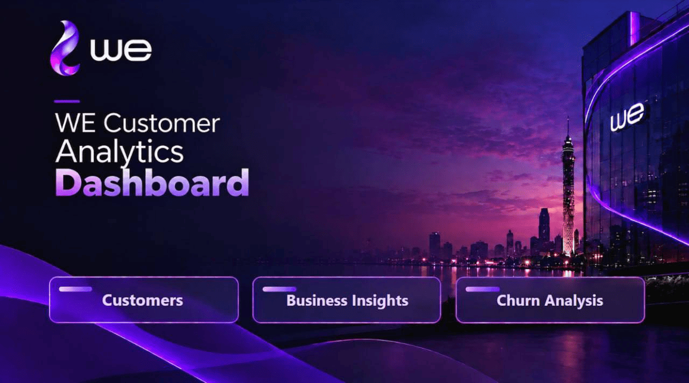
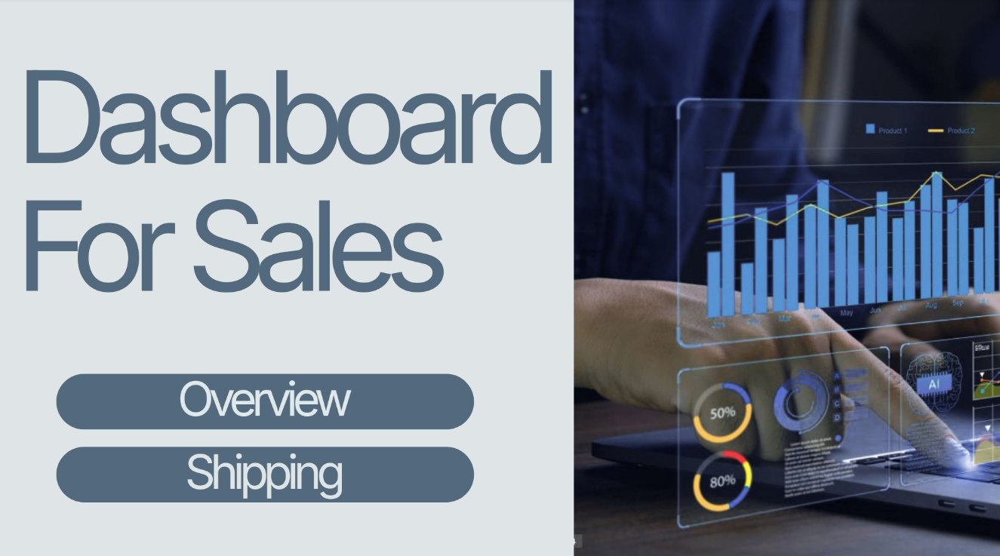

01
Data Cleaning
Turn messy and inconsistent data into a clean, reliable dataset ready for analysis.
DATA ANALYSIS • BUSINESS INTELLIGENCE
I'm Mohamed Turky, a Computer Science student at Ain Shams University focused on Data Analysis and Business Intelligence. I work with Python, SQL, Excel, and Power BI to build practical dashboards, analyze data, and turn complex information into clear, actionable insights.
Mohamed Turky
Data AnalystABOUT ME
I work with Python, SQL, Excel, and Power BI to clean data, uncover patterns, analyze business performance, and build interactive dashboards.
Through academic projects, training programs, and practical work, I've developed a strong focus on turning complex datasets into clear, useful insights that are easier to understand and act on.
SERVICES
Turn messy and inconsistent data into a clean, reliable dataset ready for analysis.
Find patterns, trends, and key insights that help you understand what is really happening in your business.
Build interactive dashboards that turn complex data into clear KPIs and easy-to-use business views.
Turn analysis into clear reports and actionable insights that make business decisions easier.
SELECTED WORK
04 PROJECTS

Python • Power BI • Machine Learning
Customer behavior analysis, churn exploration, visualization, dashboarding, and machine learning modeling.
Power BI • Excel
Interactive sales reporting with KPIs and visuals designed to make performance easier to monitor.

Power BI • Excel
Sales performance analysis and dashboard visualization focused on sales, shipping, products, categories, and business insights.
Python • Data Analysis
Analyzing student scores, grades, test preparation, parental education, subject relationships, and performance patterns.
CASE STUDY
DASHBOARD PREVIEW
PROFESSIONAL BIO
Your data already has the answers. I help you find them. I help businesses turn raw and confusing data into clear insights, interactive dashboards, and practical reports that make performance easier to understand and decisions easier to make. I work with Python, SQL, Excel, and Power BI across data cleaning, analysis, visualization, and dashboard development. My focus is not just on making charts look good, but on finding the story behind the numbers and turning it into something useful.
I don't just work with data, I look for what the data is trying to tell you. From messy datasets to interactive dashboards, I focus on making complex information simple, clear, and useful for real business decisions.
Have data that needs to make sense? Let's turn it into something useful.
LET'S CONNECT
I'm always interested in practical projects, collaborations, and opportunities to turn data into something useful.